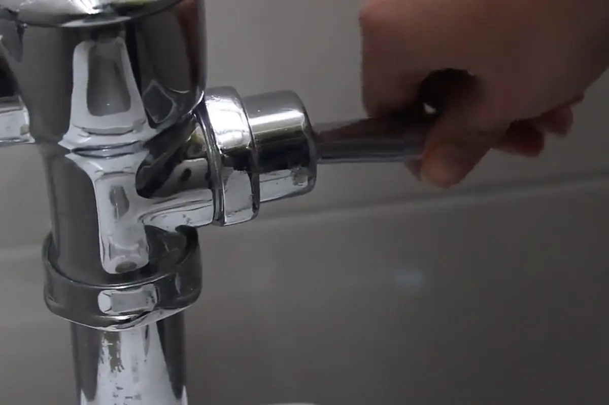

Our story
About Sunrise Plumbing
We're a locally owned plumbing company in Austin. Marcus Rivera started it in 2009, and we've grown to twelve licensed plumbers without changing how we treat people.
One van, one plumber and a phone that got answered
Marcus grew up in South Austin and learned the trade from his dad and grandfather, who were both plumbers. After twelve years working for other companies, he got tired of watching customers get sold work they didn't need. So he bought a used van and started Sunrise.
The first rule was to answer the phone. If someone's kitchen is flooding at midnight, a voicemail doesn't help them. That's still how we run things. Our dispatchers are here in Austin, and they pick up at 3 a.m. the same as at noon.
Today we have twelve licensed plumbers and eight trucks. We're still independently owned, with no franchise office or investment firm taking a cut, and that's a big part of how we keep prices fair.

Founded in 2009 Austin owned and operated
Our team
The people you'll meet
Every plumber on our team is licensed by the Texas State Board of Plumbing Examiners. Here are three of them.

Marcus Rivera
Founder and Master Plumber
Twenty-two years in the trade and a third-generation Austin plumber. Marcus still runs calls most weeks, usually the tricky slab leaks and repipes.
Texas Master Plumber License M-00000
Daniel Torres
Senior Journeyman Plumber
Ten years with Sunrise. Daniel is our go-to for tankless water heaters and new construction, and he trains our apprentices.
Texas Journeyman Plumber License J-00000
Priya Nair
Lead Plumber and Dispatch Manager
Eight years as a licensed plumber. Priya runs our dispatch desk and handles leak detection, so she's often the voice you hear on emergency calls.
Texas Journeyman Plumber License J-00001
Licensed, insured and accountable
Texas licensed
Licensed through the Texas State Board of Plumbing Examiners. You can look up any plumber's license on the TSBPE website (opens in a new tab).
Insured for $2 million
General liability plus workers' comp on every employee. We'll send a certificate of insurance if you ask.
1-year labor warranty
If a repair we made fails within a year because of our work, we come back and fix it for free.
Written quotes
You get the price in writing before work starts, and it doesn't change without your okay.
Part of the neighborhood
We sponsor a few youth sports teams each season and donate plumbing work to local home repair nonprofits. A few times a year we also do free repairs for seniors on fixed incomes who reach out through their churches or neighborhood groups. We'd like to do more of it every year.
Call now and talk to a plumber
Day or night. If it can wait, send a message and we'll call you back with a free estimate.
Sunrise Plumbing · 123 Main Street, Austin, TX 78701 · Texas Master Plumber License M-00000